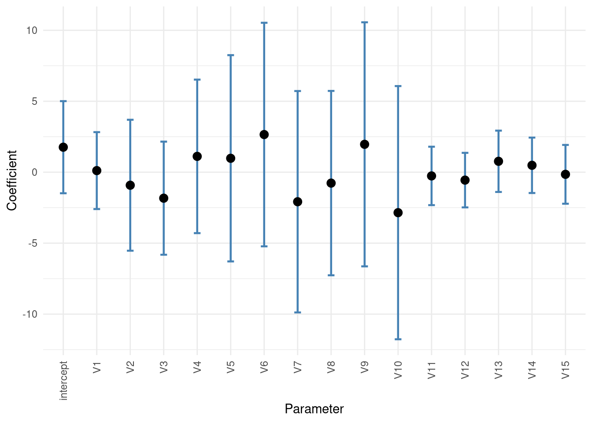
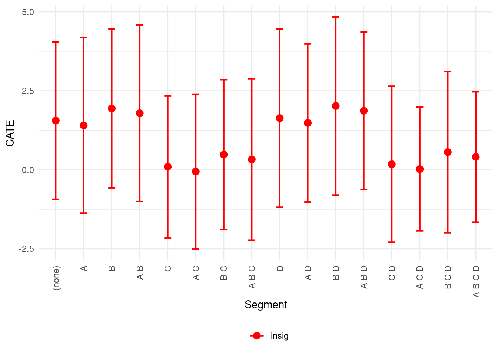

Code
packages <- c(
"RCausalML",
"ggplot2"
)
Double Machine Learning (DML) fits outcome and treatment with flexible ML, then uses a linear model to predict outcome residuals from treatment residuals. The EconML Weighted Double ML notebook demonstrates summarized data: for each segment (unique covariate profile), the data are summarized into one or two rows with frequency weights (freq_weight) and sample variance (sample_var). Estimators then use weighted regression for correctness.
The RCausalML R package does not currently support freq_weight or sample_var in fit(). This notebook therefore uses the raw (unsummarized) data with the same DGP, so that the workflow (LinearDML, effect by segment, coefficients, polynomial CATE, confidence intervals, CausalForestDML) is directly comparable. When using summarized data in practice, you can either expand the data by repeating rows according to segment counts (approximate weighting) or use EconML in Python with native weighted DML.
Weighted Double Machine Learning (weighted DML) is an extension of the standard Double/Debiased Machine Learning (DML) framework for causal inference. It enables estimation of weighted average treatment effects (or effects in specific subgroups/populations) while preserving DML’s key advantages: robustness to high-dimensional confounders, flexibility with modern machine learning models for nuisance parameters, and √N-consistency via Neyman orthogonality and cross-fitting.
Standard DML (Chernozhukov et al., 2018) targets parameters like the average treatment effect (ATE) in partially linear or interactive regression models by “partialling out” confounding via machine learning. Weighted DML simply generalizes this by incorporating a user-specified weight function ω (which can depend on Y, D, X or be data-driven) into the score/estimating equation. This lets you target: - Average Treatment Effect on the Treated (ATTE) - Group Average Treatment Effects (GATEs) or subgroup effects - Effects in specific subpopulations (e.g., compliers in an IV setting, or treated in period 1 for dynamic treatments) - Dynamic/sequential treatment effects with subgroup weighting
It is implemented in libraries like DoubleML (Python/R) and appears in applied papers (e.g., for dynamic treatments or reweighting to compliers).
DML solves a moment condition (score equation) that is orthogonal (insensitive) to estimation errors in “nuisance” functions. This allows ML models (random forests, neural nets, boosted trees, etc.) to estimate nuisances at slower rates (n⁻¹/⁴) while still getting √N-consistent estimates of the causal parameter θ.
For the interactive regression model (IRM) with binary treatment D and outcome Y (controlling for high-dimensional X): - Nuisance functions (estimated via ML with cross-fitting): - m₀(X) = E[D | X] (propensity score) - g₀(d, X) = E[Y | D = d, X] (conditional outcome regressions for d = 0,1) - Orthogonal score for ATE (θ₀ = E[g₀(1,X) − g₀(0,X)]):
\[ \psi(W; \theta, \eta) = \left( g_0(1,X) - g_0(0,X) \right) + \frac{D(Y - g_0(1,X))}{m_0(X)} - \frac{(1-D)(Y - g_0(0,X))}{1-m_0(X)} - \theta \]
(or equivalent forms; the exact expression varies slightly by model).
Cross-fitting algorithm (K-fold):
Weighted DML replaces the target with a weighted version:
\[ \theta_0 = \mathbb{E}\left[ \left( g_0(1,X) - g_0(0,X) \right) \omega(Y,D,X) \right] \] (or normalized by E[ω] if you want a weighted average). The weight function ω determines the estimand:
The score function is multiplied/adjusted by ω (or its conditional expectation ω̄(X) = E[ω | X] when needed). In DoubleMLIRM, you pass weights (a vector or dictionary) at initialization; the package automatically builds the weighted score and handles cross-fitting.
Step-by-step procedure (same cross-fitting spirit as standard DML): 1. Define the target weights ω (fixed vector, function of observed data, or predicted via a separate ML step, e.g., random forest for complier probability). 2. Estimate nuisances (m₀(X), g₀(d,X)) with ML + cross-fitting (exactly as in standard DML). 3. Form the weighted orthogonal score ψ_weighted = ω × (standard score terms) − θ (or the precise formulation for the chosen model). 4. Solve the empirical moment condition: average the weighted scores over the sample (or solve a weighted regression on residualized outcomes/treatments). 5. Inference: Use the influence function / asymptotic variance from the scores (or bootstrap) to get standard errors and CIs. The estimator remains doubly robust and Neyman-orthogonal.
For dynamic/sequential treatments (multiple periods), the score becomes more nested: it uses sequential propensity scores p_{d_t}(history, X) and nested conditional means μ and ν to avoid modeling the full distribution of time-varying covariates. Weighting by g(X₀) = Pr(S=1 | X₀) then targets subgroup-specific dynamic effects.
Why it works:
In short, weighted DML is “DML with a weighting function plugged into the orthogonal score.” It keeps all the power of standard DML but lets you flexibly reweight to answer more targeted causal questions—exactly what you need when the average effect across the whole population isn’t the one you care about.
Following R packages are required to run this notebook. If any of these packages are not installed, you can install them using the code below:
RCausalML, ggplot2
packages <- c(
"RCausalML",
"ggplot2"
)# Install missing packages
# new_packages <- packages[!(packages %in% installed.packages()[, "Package"])]
# if (length(new_packages)) install.packages(new_packages)# Load packages with suppressed messages
invisible(lapply(packages, function(pkg) {
suppressPackageStartupMessages(library(pkg, character.only = TRUE))
}))# Check loaded packages
cat("Successfully loaded packages:\n")Successfully loaded packages:[1] "package:ggplot2" "package:RCausalML" "package:stats"
[4] "package:graphics" "package:grDevices" "package:utils"
[7] "package:datasets" "package:methods" "package:base" set.seed(123)We use the same DGP as the EconML notebook: binary features (columns 1–4 for heterogeneity, rest as controls), an imbalanced binary treatment depending on the first feature, and an outcome with treatment-effect heterogeneity and heteroskedastic errors.
n <- 10000L # number of raw samples
d <- 10L # number of binary features + 1
# Binary features; first 4 used for heterogeneity, rest as controls
X_raw <- matrix(rbinom(n * d, 1, 0.5), n, d)
# First column is treatment: imbalanced A/B test
log_odds <- qlogis(pmin(pmax(X_raw[, 2], 0.001), 0.999)) # expit(X[,2])-like
X_raw[, 1] <- rbinom(n, 1, plogis(log_odds))
# Outcome: heterogeneity from first binary feature, confounding, heteroskedastic errors
y_raw <- (-1 + 2 * X_raw[, 2]) * X_raw[, 1] + X_raw[, 2] +
(1 * X_raw[, 2] + 1) * rnorm(n, 0, 1)Note: In the Python notebook, the data are then summarized per segment (unique X row) with two copies per segment, yielding X_sum, y_sum, n_sum, and var_sum. Estimation uses freq_weight=n_sum and sample_var=var_sum. Here we keep the raw data and fit on it.
We fit LinearDML with binary treatment. Covariates: first column is treatment, columns 2–5 are effect modifiers (A, B, C, D), columns 6–10 are controls. The R API uses a single design matrix: we pass effect modifiers and controls together as X; the CATE is linear in the effect modifiers. For a closer match to the Python setup (CATE in A–D only), we pass only the four effect modifiers as X; the first stage then uses only those four (no separate W in the current R API).
# Treatment = first column; X = effect modifiers (cols 2--5); W = controls (cols 6--10)
treatment <- X_raw[, 1]
X_effect <- X_raw[, 2:5, drop = FALSE]
W_control <- X_raw[, 6:d, drop = FALSE]
colnames(X_effect) <- c("A", "B", "C", "D")
# Full X for first stage (effect modifiers + controls). CATE will be linear in X_effect.
X_full <- cbind(X_effect, W_control)
colnames(X_full) <- c(colnames(X_effect), paste0("W", seq_len(ncol(W_control))))
est <- LinearDML(
model_y = "ranger",
model_t = "ranger",
fit_cate_intercept = TRUE,
n_fold = 3L,
seed = 123L
)
# Fit on full X so first stage uses all covariates; CATE is linear in all columns.
# For CATE linear only in A--D, we would fit on X_effect only (weaker first stage).
est <- fit(est, X_full, treatment, y_raw)Treatment effect for a specific segment (e.g. features A=1, B=0, C=0, D=0). We pass one row of covariates for that segment; predict() returns the CATE at that point. For a confidence interval we use estimate_ate() over the whole sample or bootstrap; segment-level intervals are not built-in in the R DMLearner.
# Segment with features [1, 0, 0, 0] (A=1, B=0, C=0, D=0); use mean controls for W
x_segment <- matrix(c(1, 0, 0, 0), nrow = 1)
colnames(x_segment) <- c("A", "B", "C", "D")
# For prediction we need full X (effect modifiers + controls). Use sample means for W.
W_mean <- matrix(colMeans(W_control), nrow = 1, ncol = ncol(W_control), byrow = TRUE)
newdata_segment <- cbind(x_segment, W_mean)
colnames(newdata_segment) <- colnames(X_full)
effect_segment <- predict(est, newdata_segment)
print(paste0("Treatment effect for segment [A=1, B=0, C=0, D=0]: ", round(effect_segment, 4)))[1] "Treatment effect for segment [A=1, B=0, C=0, D=0]: 1.4059"The linear CATE model is \(\theta(X) = \text{intercept} + A\,\beta_A + B\,\beta_B + C\,\beta_C + D\,\beta_D + \ldots\). We report the estimated coefficients and intercept (and feature names for the effect-modifier part).
[1] "Coefficients of the linear CATE model (effect modifiers + controls):"print(data.frame(feature = cnames, coef = round(as.numeric(coef_est), 4))) feature coef
1 A -0.1522
2 B 0.3839
3 C -1.4603
4 D 0.0786
5 W1 0.2291
6 W2 -0.7001
7 W3 0.4543
8 W4 -0.1757
9 W5 0.6145[1] "Intercept: 1.3453"We can use polynomial (e.g. interaction-only) features in the final stage by building a design matrix with interactions and passing it as X. Here we use LinearDML with interaction-only polynomial features of degree 2 (all main effects and pairwise products of A–D) plus the control columns, so the CATE is non-linear in the original effect modifiers. For a much larger polynomial basis, SparseLinearDML (Lasso final stage) is the usual choice in RCausalML.
# Interaction-only polynomial features for effect modifiers (A--D)
poly_X <- stats::model.matrix(~ .^2 - 1, data = as.data.frame(X_effect))
# Drop intercept-like column if present; keep interactions and main effects
X_poly_full <- cbind(poly_X, W_control)
colnames(X_poly_full) <- paste0("V", seq_len(ncol(X_poly_full)))
est_poly <- LinearDML(
model_y = "ranger",
model_t = "ranger",
fit_cate_intercept = TRUE,
n_fold = 3L,
seed = 123L
)
est_poly <- fit(est_poly, X_poly_full, treatment, y_raw)We extract the underlying lm object from the polynomial LinearDML final stage (est_poly) and report confidence intervals for the intercept and coefficients (e.g. at 99% level).
m <- est_poly$model_cate
if (!is.null(m$model) && inherits(m$model, "lm")) {
ci_int <- stats::confint(m$model, level = 0.99)
all_coef <- stats::coef(m$model)
point_int <- as.numeric(all_coef[1])
point_coef <- as.numeric(all_coef[-1])
lower_int <- ci_int[1, 1]
upper_int <- ci_int[1, 2]
lower_coef <- ci_int[-1, 1]
upper_coef <- ci_int[-1, 2]
n_coef <- length(point_coef)
} else {
point_int <- intercept(est_poly)
point_coef <- coef(est_poly)
n_coef <- length(point_coef)
lower_int <- upper_int <- lower_coef <- upper_coef <- NA_real_
}idx <- seq_len(n_coef + 1)
pts <- c(point_int, point_coef)
lo <- c(lower_int, lower_coef)
hi <- c(upper_int, upper_coef)
labels <- c("intercept", if (!is.null(est_poly$X_names) && length(est_poly$X_names) == n_coef) est_poly$X_names else paste0("V", seq_len(n_coef)))
df_coef <- data.frame(
param = factor(idx),
point = pts,
lower = lo,
upper = hi,
label = labels
)
ggplot(df_coef, aes(x = param, y = point)) +
geom_errorbar(aes(ymin = lower, ymax = upper), width = 0.2, colour = "steelblue", linewidth = 0.8) +
geom_point(size = 3) +
scale_x_discrete(labels = df_coef$label) +
labs(y = "Coefficient", x = "Parameter") +
theme_minimal() +
theme(axis.text.x = element_text(angle = 90, hjust = 1, vjust = 0.5))
We compute the CATE for all 16 segments (all combinations of A, B, C, D in \(\{0,1\}\)), with point estimates and (where available) confidence intervals. Segment-level intervals are approximated using the asymptotic variance of the linear CATE model (predict at each segment and use the linear combination of coefficient variances).
lst <- expand.grid(A = 0:1, B = 0:1, C = 0:1, D = 0:1)
feat_names_abbrev <- c("A", "B", "C", "D")
segment_labels <- apply(lst, 1, function(r) paste(feat_names_abbrev[r > 0], collapse = " "))
segment_labels[segment_labels == ""] <- "(none)"
W_mean_all <- matrix(colMeans(W_control), nrow = nrow(lst), ncol = ncol(W_control), byrow = TRUE)
newdata_all <- cbind(as.matrix(lst), W_mean_all)
colnames(newdata_all) <- colnames(X_full)
point_cate <- predict(est, newdata_all)
# Approximate CI using the lm variance: for linear CATE, Var(theta(x)) = x' V x
if (!is.null(est$model_cate$model) && inherits(est$model_cate$model, "lm")) {
V <- stats::vcov(est$model_cate$model)
# Design for each segment: intercept + x (effect modifiers + W means)
D_seg <- cbind(1, newdata_all)
se_cate <- sqrt(diag(D_seg %*% V %*% t(D_seg)))
z <- qnorm(0.995)
lower_cate <- point_cate - z * se_cate
upper_cate <- point_cate + z * se_cate
} else {
lower_cate <- upper_cate <- rep(NA_real_, length(point_cate))
}stat_sig <- (lower_cate > 0) | (upper_cate < 0)
df_seg <- data.frame(
segment = factor(segment_labels, levels = segment_labels),
point = point_cate,
lower = lower_cate,
upper = upper_cate,
significant = stat_sig
)
ggplot(df_seg, aes(x = segment, y = point, colour = significant)) +
geom_errorbar(aes(ymin = lower, ymax = upper), width = 0.25, linewidth = 0.7) +
geom_point(size = 3) +
scale_colour_manual(values = c("FALSE" = "red", "TRUE" = "black"), labels = c("insig", "stat_sig")) +
labs(y = "CATE", x = "Segment", colour = "") +
theme_minimal() +
theme(axis.text.x = element_text(angle = 90, hjust = 1, vjust = 0.5), legend.position = "bottom")
The Python notebook uses CausalForestDML with sample_weight=n_sum for summarized data. The R CausalForestDML does not support sample weights; we fit on the raw data for comparison.
if (requireNamespace("grf", quietly = TRUE)) {
est_forest <- CausalForestDML(
model_y = "ranger",
model_t = "ranger",
n_fold = 3L,
seed = 123L,
num_trees = 1000L,
min_node_size = 2L
)
est_forest <- fit(est_forest, X_full, treatment, y_raw)
cate_forest <- predict(est_forest, newdata_all)
print("CausalForestDML fitted (no sample weights in R). CATE for first 5 segments:")
print(round(cate_forest[1:5], 4))
} else {
message("Package 'grf' not installed; CausalForestDML skipped.")
cate_forest <- rep(NA_real_, nrow(newdata_all))
}[1] "CausalForestDML fitted (no sample weights in R). CATE for first 5 segments:"
[1] -1.3027 -0.5214 -1.3029 -1.1153 -1.9368freq_weight (segment counts) and sample_var (within-segment variance) for correct inference. RCausalML currently fits on raw data only; for summarized data you can expand rows by count or use EconML in Python.est_poly), coefficient and CATE intervals, and CausalForestDML.SingleTreeCateInterpreter) is not implemented in R; see the EconML weighted DML notebook for that feature.freq_weight, sample_var)R/DMLearner.R (LinearDML, SparseLinearDML, CausalForestDML)